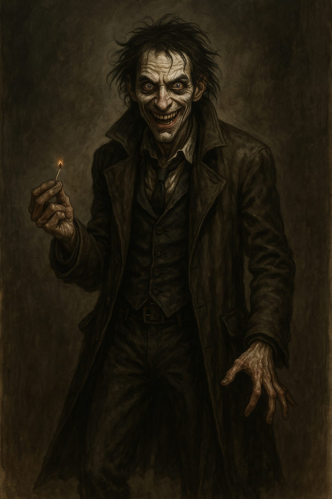

Soren, o Louco
Informações básicas
Nome do personagem: Soren, o Louco
Classe: Louco
Raça: Humano
Status
Vida: 60/60
Estabilidade: 10/10
Inventário
Besouro morto
Pata de coelho
Punhado de lama
Ouro: 13
Habilidades
Risada Profana (Habilidade Ativa)
O Louco começa a rir alto, de um jeito desconfortável, como se soubesse de algo que ninguém mais entende. O riso preenche o campo de batalha, confundindo inimigos e aliados.
Efeito: Todos os inimigos rolam um teste de resistência mental. Os que falharem perdem sua ação no próximo turno. Um aliado aleatório também pode ser afetado.
Custo da Estabilidade: 5 +1d4 de energia.
Amor de Facas (Habilidade Ativa)
Ele sorri com os olhos arregalados. Avança sem piscar. Agarra o alvo com as mãos trêmulas e enfia a lâmina repetidamente, não por raiva, mas por compulsão. Mesmo quando o alvo cai, ele continua. Gritos, sangue e ossos. Só para quando a realidade o chama de volta... se chamar.
Efeito: O Louco agarra um inimigo e começa a esfaqueá-lo em todos os turnos seguintes (1d12 por turno). A cada novo turno, ele deve fazer um teste de Vontade ( 2 D20 - Um dado contra o outro). Se falhar, continua esfaqueando — mesmo se o inimigo já estiver morto. Durante esse tempo, fica vulnerável a ataques corpo a corpo (recebe +1 de dano de fontes físicas).
Custo de Estabilidade: 3 + 1d4 pontos.
Da Minha Mente Para a Sua (Habilidade Ativa)
Ele se aproxima, olhos fixos como um espelho rachado. Não precisa gritar. Apenas sussurra algo... algo errado, algo que não deveria existir. A mente do alvo quebra como porcelana. O inimigo olha ao redor, incapaz de distinguir amigo de ameaça. Agora, o caos é dele também.
Efeito: Escolha um inimigo em alcance médio. Ele deve passar em um teste de Vontade ( 1 d12) ou será dominado por um surto de loucura. Durante 1 turno, o inimigo ataca o alvo mais próximo — aliado, inimigo ou objeto — com seu ataque principal. Não é possível controlar o alvo, apenas induzir o caos.
Custo de Estabilidade: 4 + 1d4 pontos.
Estabilidade (Energia): O Louco possui 10 pontos de Estabilidade. Usar habilidades insanas consome entre 3 e 9 pontos. Se chegar a 0, entra em estado de Surto, perdendo defesa e controle. Estabilidade é recuperada com descanso, auxílio de aliados, ou testes de vontade após combate.